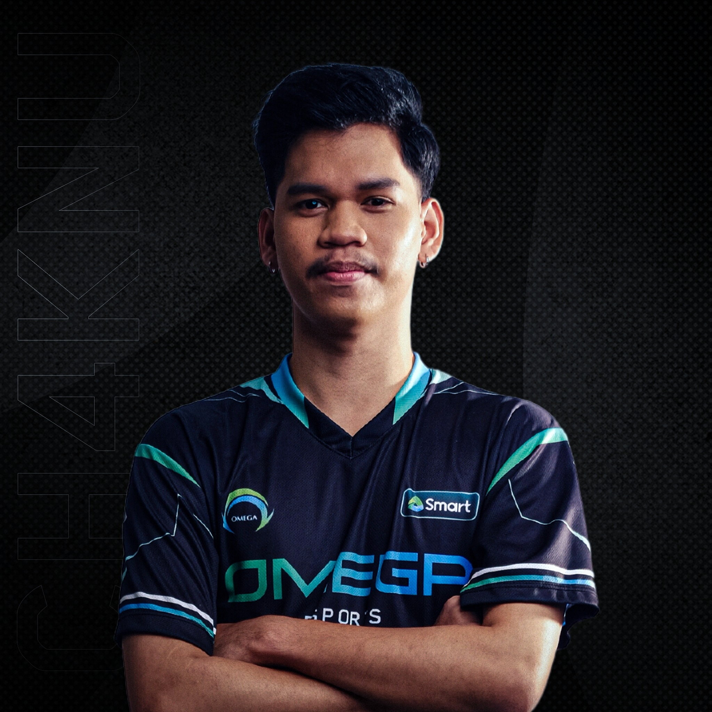

Chaknu

Chaknu is an Mobile Legends: Bang Bang Filipino player who is currently playing as a Roamer for Omega
Esports.
For more information click here
Joshua "Chaknu" Mangilog, born on August 19, 2001, in the Philippines, is a well-known personality in the
Mobile Legends gaming community.
He gained popularity through his CH4KNU OFFICIAL YouTube channel, which
he
launched in 2019. Chaknu's journey into gaming started when he observed his brother-in-law playing Mobile
Legends on his phone, sparking his interest in the game. Over time, he honed his skills and began sharing
his
gameplay experiences and insights on his YouTube channel, attracting a dedicated audience of fellow gamers and
fans of Mobile Legends. His content likely includes gameplay footage, tips and tricks, strategies, and
other
related content centered around the game.
Chaknu's presence in the gaming community has made him a
recognized
figure among Mobile Legends enthusiasts.
oshua "Chaknu" Mangilog's influence extends beyond his YouTube channel. His
ch4knulovesall TikTok account has amassed an impressive following of over 4.7 million followers.
Among
his
TikTok content, one of his most notable videos has gained significant attention, with over 20.2 million views.
This particular TikTok features him showcasing his dance moves to the song "Low" by Flo Rida. This highlights
Chaknu's versatility and ability to engage with his audience through various forms of content beyond just
gaming-related material.
His popularity on TikTok further solidifies his presence in the online community
and
showcases his ability to connect with a diverse audience through his content.